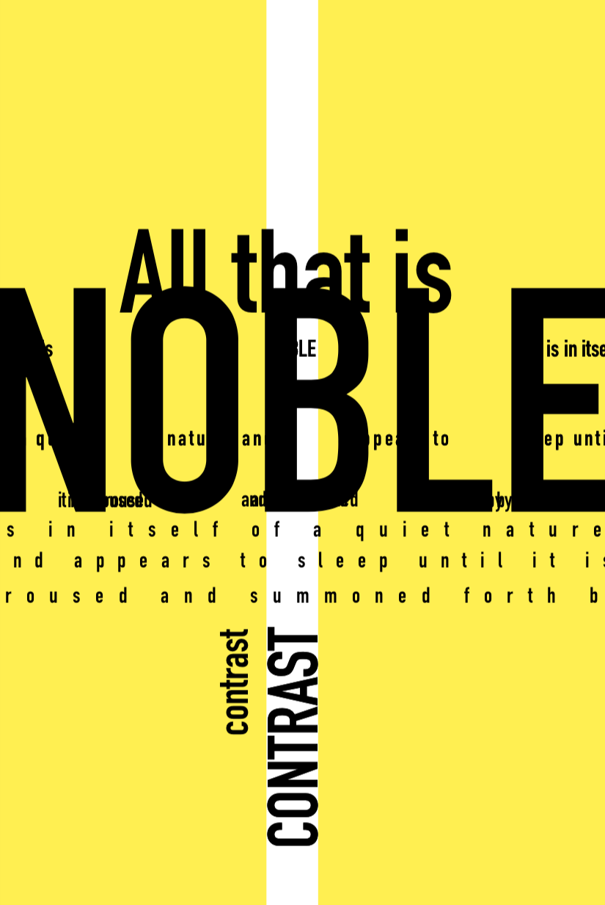

Justin: What attracted you to graphic design?
Justin: At Leff, the designers are heavily influenced by the International Typographic Style.* Why do you think that style is
so effective?
Justin: What advice do you have for others who want to get into graphic design?
Justin: How did early jobs influence your work ethic?
Justin: What do you do when you disagree with a client?
Justin: If you weren’t a designer what would you do?

Leff interview series: Design to design
Typography
Design exploration
Design career
Design by Jake G.
Design by Jake G.

Design by Jake G.
Jake: My advice is more about work ethic than talent. Anyone can become anything they want to be, but it's important that people feel good about hiring you. Stay honest and loyal, work hard, and always appreciate that you have a job. And never believe you are better than a project.
Jake: I might be a toll collector or something. I worry about design way too much, and sometimes if I’m thinking through a problem, I carry that home and it burns in my mind until I can figure it out.
People tell me I would be great at owning a record store or running a record mail-order business, but I might get sick of records—and I don’t want that.
Jake: The curse of being a graphic designer is that you can get obsessive, and I tend to get very invested in what I’m working on, which can make it hard to let go of certain battles. It’s frustrating to present something you believe in to somebody and have them not see what you see. Over the years, I’ve learned to explain what I did and why, and if the client doesn’t agree with my choices, I understand it’s out of my hands. They ultimately own the project, and it’s important that they’re satisfied with the end product.
Jake: Growing up, I spent Saturdays helping my dad change the oil on semitrucks. I was definitely inspired by my parents. We’re immigrants, and I watched them work hard my entire life, so, really, I owe my work ethic to them.
Then when I started my first “official” job when I was 16, working at a hardware store, I learned what working with people was like. I noticed managers throwing my coworkers under the bus for their own mistakes. It was easy to blame a kid for something, knowing that that person is not there for the long run. Those situations were a wake-up call for me about integrity and the importance of trust within a work team.
*The International Typographic Style was created by designers in Switzerland during the 1950s. It focuses on asymmetrical layouts, sans-serif typefaces, and a use of grids to aid in the position of design elements.
Jake is a senior design associate who specializes in working with business writers and editors to visualize complex data and information.
Justin is a design associate who takes the lead on new design formats and creative approaches to content for clients and Leff's own marketing and communications collateral.
Sometimes when work is busy it can be hard to press pause and remember what drew us to it in the first place. After all, each of us has a story that explains our career trajectory.
In this Leff Q&A, design associate Justin sits down with senior design associate Jake to discuss what drew him to graphic design, advice for aspiring designers, and how he works with clients.
Jake: It’s a simple style that makes the content clearer for the reader. The use of clean type, geometrical imagery, and a grid organizes the information in a way that is easy for the eye to follow. A lot of people think they can design because they are wizards in Photoshop and can make things look "pretty," but the way you organize information is the most important part of graphic design.
Jake: I've always been a visual person. I've also been a music fan
all my life, and I loved album designs and packaging. In school,
I doodled band logos all over my notebooks. I used to record
music videos from TV on VHS tapes and then take the cover off
of clamshell VHS boxes, design my own version poorly in Microsoft Paint, and place it back on the case.
In high school, I had the opportunity to take graphic design classes and ended up being pretty good at it. My teacher noticed and gave me design jobs to do for the school—designing and screen-printing shirts for a sports team and laying out the school newspaper. I think he was overwhelmed by how hellish the other kids in my class were, so he was relieved when he discovered that I could do actual work for him. This “real” stuff helped me learn much faster than the small, classroom assignments. I learned a lot that way.